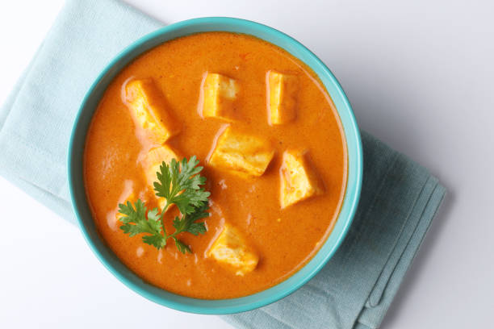

<
Shahi Paneer

Description
Shahi Paneer is a royal North Indian dish made with paneer (Indian cottage cheese) simmered in a rich, creamy gravy of onions, tomatoes, cashews, and aromatic spices. Known for its mildly sweet taste and luxurious texture, it’s a popular choice in restaurants and festive meals.
The word “Shahi” means royal, and this dish lives up to its name with the use of ghee, cream, and warm spices. It's best served with naan, roti, or jeera rice, making for a hearty, satisfying vegetarian main course.
Ingredients
- For the Gravy:
- 2 tablespoons ghee or oil
- 1 bay leaf
- 2 green cardamom pods
- 1-inch cinnamon stick
- 2 medium onions (chopped)
- 1 tablespoon ginger-garlic paste
- 2 large tomatoes (pureed)
- 10-12 cashews (soaked)
- ½ teaspoon turmeric powder
- 1 teaspoon red chili powder
- 1 teaspoon garam masala
- Salt to taste
- For the Final Dish:
- 200-250 grams paneer (cubed)
- ¼ cup fresh cream
- ¼ cup milk (optional)
- 1 teaspoon kasuri methi (crushed)
- 1 teaspoon sugar (optional)
- Few drops of kewra or rose water (optional)
- Coriander leaves (for garnish)
Steps
- Heat ghee in a pan. Add bay leaf, cardamom, and cinnamon. Sauté for a few seconds until aromatic.
- Add chopped onions and sauté until golden brown. Stir in ginger-garlic paste and cook until raw smell disappears.
- Blend soaked cashews and tomato puree into a smooth paste. Add to the pan and cook until the oil begins to separate.
- Mix in turmeric, red chili powder, garam masala, and salt. Cook for a few more minutes.
- Add cream and milk (if using) to the gravy. Simmer on low heat for 3–5 minutes.
- Add paneer cubes and cook gently for 5-7 minutes, allowing them to absorb the flavors.
- Finish by adding kasuri methi, sugar (optional), and rose/kewra water.
- Garnish with coriander and a swirl of cream. Serve hot with naan or rice.
Home